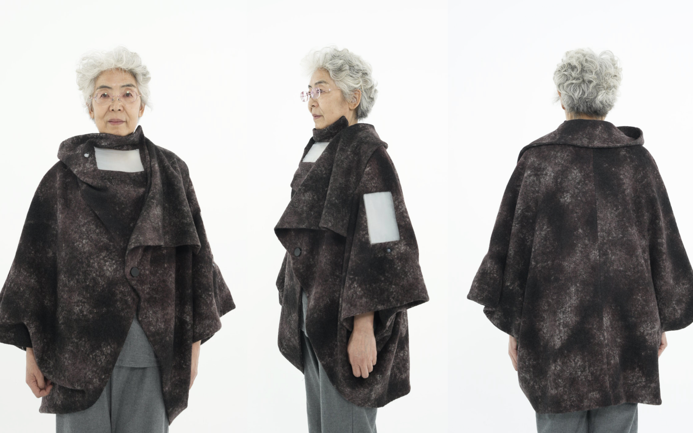
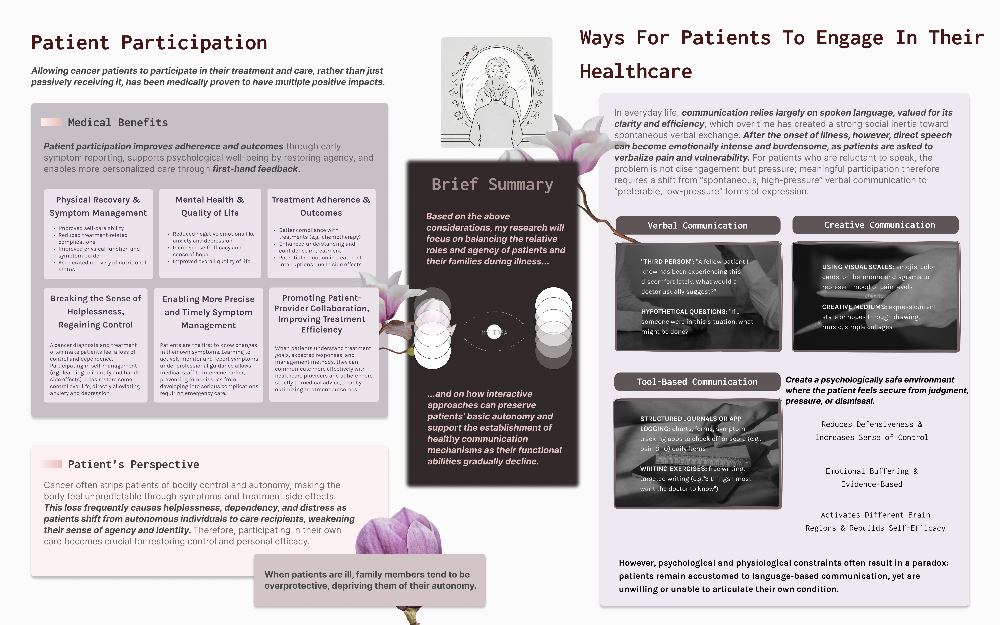
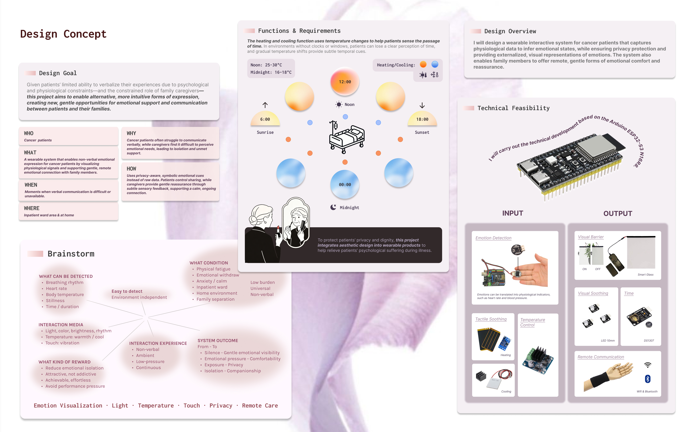
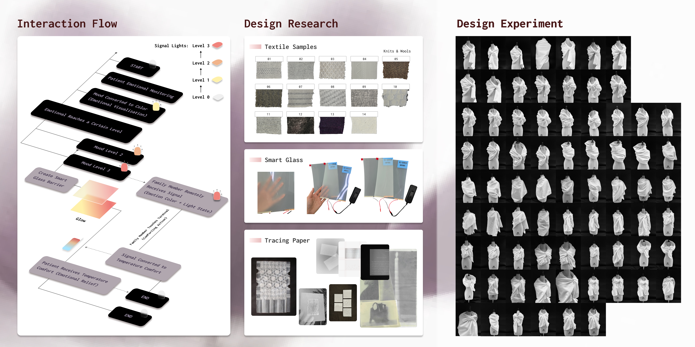
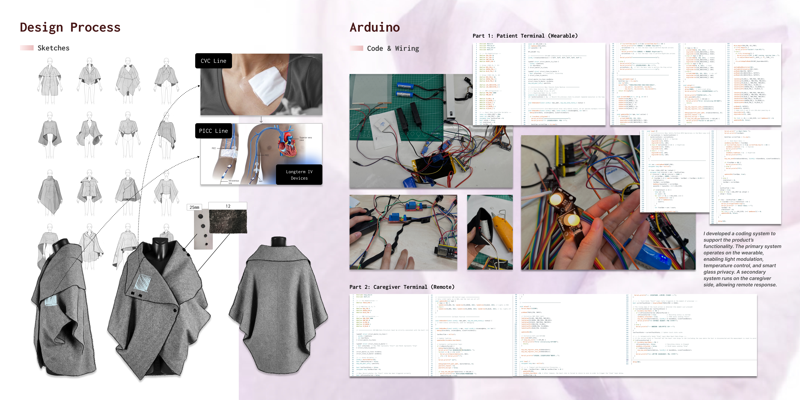
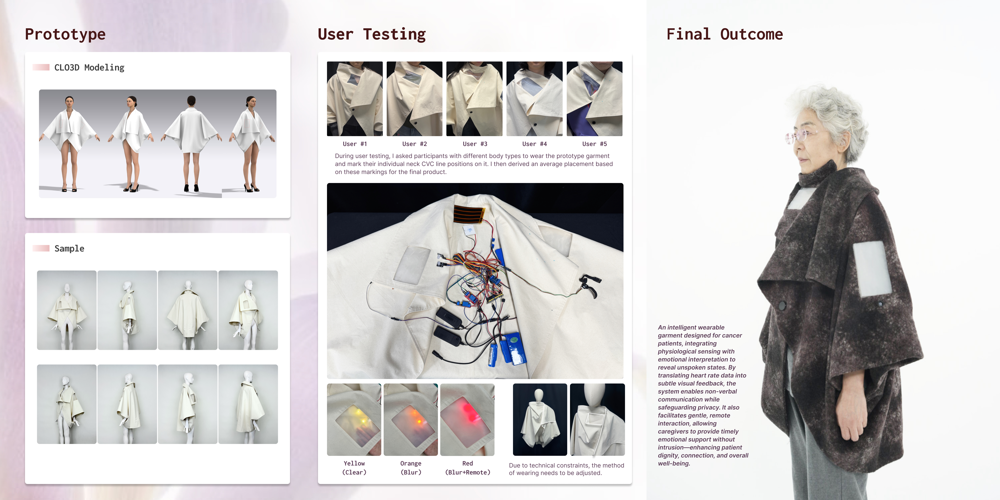
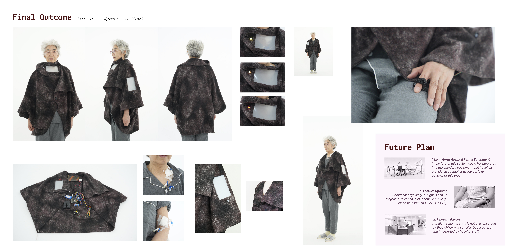

Selected Work / 01
EchoSkin
Wearable Empathetic Interaction for End-of-Life Care

Born from my intimate experience accompanying my grandmother through her arduous, years-long battle with cancer, EchoSkin transcends traditional product design to address the profound emotional isolation often felt in end-of-life care.
Witnessing her struggle to articulate discomfort and the gradual erosion of her dignity, I developed a wearable concept that bridges the silence between patients and caregivers.
Utilising discreet sensors to capture real-time physiological signals, the device translates changes in the user's physical state into subtle emotional feedback.
Rather than relying entirely on verbal communication, which can become difficult or exhausting for patients receiving end-of-life care, EchoSkin explores a non-verbal communication channel between patients, caregivers and family members.
End-of-life care is not only a medical challenge. Patients may experience pain, anxiety, fear, loneliness and emotional distress that are difficult to communicate through conventional healthcare interactions.
Caregivers and family members may therefore struggle to recognise subtle changes in a patient's emotional and physical condition.

How might technology create a more empathetic, non-verbal language between patients and the people who care for them?
EchoSkin is a wearable interaction system designed to make otherwise invisible physiological and emotional states more perceptible to caregivers and family members.
The system explores how physiological sensing can become an interface for empathy rather than simply a tool for clinical monitoring.
By translating changes in physiological signals into subtle and understandable feedback, EchoSkin aims to create opportunities for timely care, reassurance and emotional connection.

The EchoSkin concept connects physiological sensing, interpretation and human response within a continuous interaction loop.
The system is designed to transform otherwise invisible changes into an accessible layer of communication, allowing caregivers and family members to better understand moments that may be difficult to express verbally.

The design process explored the relationship between wearable form, physiological sensing and emotional communication.
Iterative development was used to investigate how the interaction could remain subtle, intuitive and appropriate for sensitive care contexts.

EchoSkin does not aim to replace human empathy with technology. Instead, it uses technology to support the moments in which empathy can be difficult to express or perceive.
The wearable becomes a subtle communication layer between the patient's internal experience and the people around them.
This creates a potential shift from reactive responses to more attentive and continuous forms of care.

EchoSkin proposes a wearable interaction system that brings together sensing, feedback and human connection within a more empathetic approach to end-of-life care.

Recognition
Ensuring that even in the final stages of life, care remains shared, dignified and deeply human.